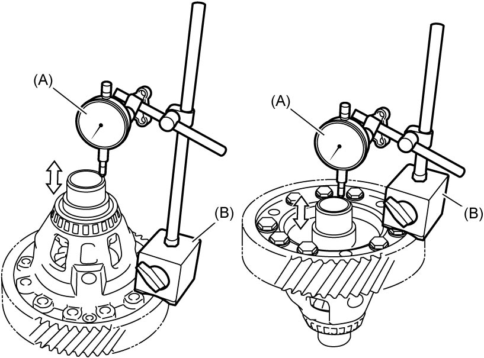

5A
| Differential Assembly Inspection |
1)Hold differential assembly with soft jawed vise and set special tools as shown.
2)Measure differential side gear thrust play.

Differential side gear thrust play
Standard: 0.05 – 0.20 mm (0.0020 – 0.0078 in.)

 "Expand image")
3)If check result is not as specified, replace differential assembly.